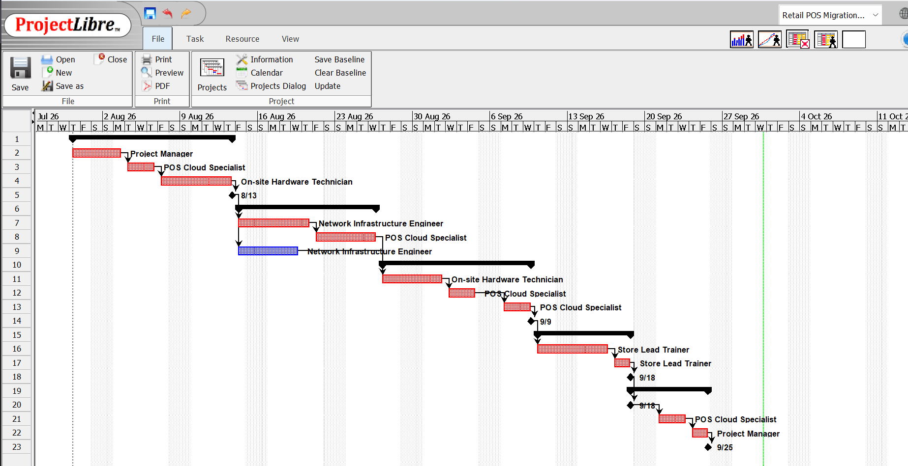
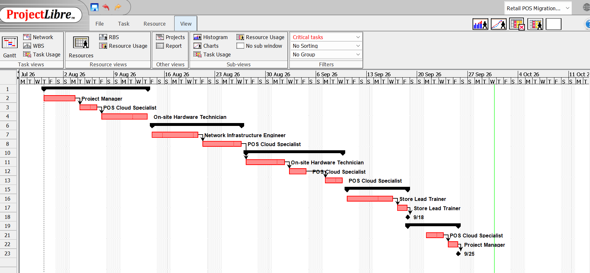
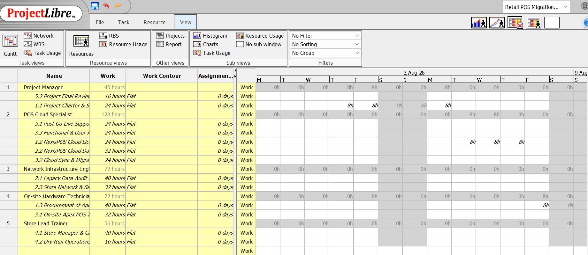
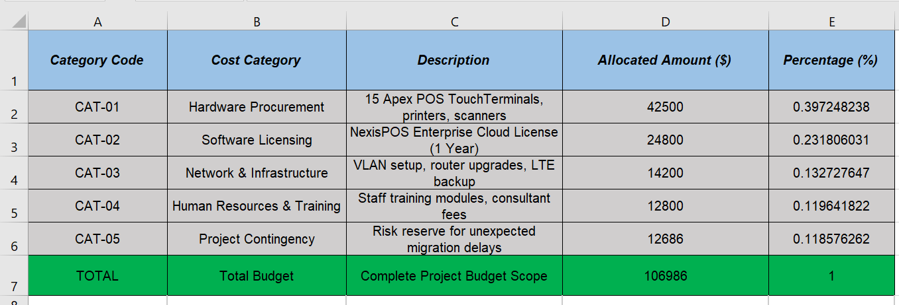

Group 02 – BISY2004 Project Management, Assessment 2

The phases overlap only where it is safe for them to overlap. Phase 2 starts before Phase 1 finishes, because cloud licensing and store network work do not depend on each other. Everything in Phase 3 is chained finish-to-start, so terminal setup cannot begin until the cloud database exists and migration cannot begin until the terminals are wired.
The resource names on the bars are worth reading as well as the dates. The POS Cloud Specialist appears against five separate bars spread across three phases, which is the heaviest single allocation in the project and the reason resource loading is examined further down this page.

1.3 Procurement of Apex Terminals → M1 Hardware Delivered → 2.1 Legacy Data Audit & Schema Mapping → 2.2 Cloud Database Provisioning → 3.1 Terminal Setup & Wiring → 3.2 Cloud Sync & Migration → 3.3 Functional & UAT → M2 UAT Sign-off → 4.1–4.2 Training & Dry-Runs → M3 and M4 Go-Live → 5.1–5.2 Hypercare & Handover → M5 Closure.
Float available: zero. Applying the critical-tasks filter removes nothing from the chart, which means there is no non-critical work anywhere in the plan. A one-day slip on any activity moves the 25 September closure date by one day. That single fact drove three management decisions: buffer stock was held against hardware delay, the change gate refused anything that added duration to a critical activity, and resource levelling was preferred over overtime.
| ID | Milestone | Owner | Baseline date | Status |
|---|---|---|---|---|
| M1 | Apex POS Hardware Delivered & Accepted | Zareen Orpa | 1 September 2026 | Done |
| M2 | UAT & Data Migration Sign-off | Farhan & Saimoon | 12 September 2026 | Done |
| M3 | Staff Readiness Certification | Ishita | 16 September 2026 | Done |
| M4 | Pilot Stores Cloud Migration Go-Live | Farhan & Zareen | 17 September 2026 | Done |
| M5 | Project Closure Completed | Saimoon Hasan | 25 September 2026 | Done |
The charter authorises the project window 30 July to 25 September 2026. Within it, the 28-day execution baseline runs 28 August to 25 September 2026 and is held in the WBS register (Figure 3.1); the ProjectLibre file is the working schedule used for dependency and critical-path analysis. All 13 work packages and five milestones closed on their baseline dates, giving a schedule variance of zero – see monitoring and closure.

| Resource | Assigned work packages | Total work |
|---|---|---|
| POS Cloud Specialist | 1.2, 2.2, 3.2, 3.3, 5.1 | 128 hours |
| Network Infrastructure Engineer | 2.1, 2.3 | 72 hours |
| On-site Hardware Technician | 1.3, 3.1 | 72 hours |
| Store Lead Trainer | 4.1, 4.2 | 56 hours |
| Project Manager | 1.1, 5.2 | 40 hours |
| Total scheduled effort | 368 hours | |
One role holds 128 of the 368 scheduled hours, or 35% of the project. On a schedule with no float that is a delivery risk rather than a workload complaint: if that person is unavailable for two days, the finish date moves. Adding people would not have helped during cutover, so the control used was resource levelling – sequencing the cloud specialist's tasks so that no two of them competed for the same days – and cross-training was recorded as a recommendation for the wider rollout.
| Code | Cost category | Description | Allocated | Share |
|---|---|---|---|---|
| CAT-01 | Hardware Procurement | 15 Apex POS TouchTerminals, printers, scanners | $42,500 | 39.7% |
| CAT-02 | Software Licensing | NexisPOS Enterprise Cloud Licence (one year) | $24,800 | 23.2% |
| CAT-03 | Network & Infrastructure | VLAN setup, router upgrades, LTE backup | $14,200 | 13.3% |
| CAT-04 | Human Resources & Training | Staff training modules, consultant fees | $12,800 | 12.0% |
| CAT-05 | Project Contingency | Risk reserve for unexpected migration delays | $12,686 | 11.9% |
| Total approved budget | $106,986 | 100% | ||

Almost two thirds of the budget (63%) is committed to hardware and licensing before a single store goes live, and both are procured in Phase 1. Once milestone M1 is accepted that money is spent, which makes any late scope change expensive as well as slow. That is the commercial reason behind the change gate described under scope control.
The 11.9% contingency was deliberately held rather than spent on extra terminals at the start. It was drawn on once, to fund the additional LTE backup gateways raised as change request CR-02 when sync latency appeared at two stores. Because the reserve existed, that response stayed inside the approved budget instead of becoming a funding request to the Steering Committee, which would have taken longer than the schedule allowed.
Finally, the combination of a 28-day window and zero float means overtime is the most likely source of a cost overrun on a project like this. Strict resource levelling protected the deadline and the training and labour line at the same time.